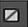
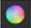
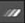

绘制笔画/形状后，您可以编辑它们的顺序，并在 RotoPaint 属性面板中使用笔画/形状列表对它们进行分组。默认情况下，最新的笔触/形状/组出现在列表的顶部，您的笔触/形状将根据它们的类型命名 (例如, “Bezier1” 或 “Smear2”)。
使用该列表，您还可以选择笔画/形状/组，并使用 “属性” 面板中的各种控件编辑它们。有些控件可以应用于组，有些不能。一些控件也只能应用于笔画或形状 (这些控件分组在 中风 和 形状 控制标签分别)。如果控件不能应用于组，则如果在 “描边/形状” 列表中选择了一个组，则该控件将变灰。
“笔触/形状” 列表提供了现有参数的概述，例如，显示项目是否被锁定、设置为不可见，或者是否应用了运动模糊。某些控件也可以通过单击其图标直接在概述中进行编辑。
您可以通过多种方式编辑笔画/形状列表，并使用它来调整笔画/形状以及它们在查看器中的显示方式。
• 您可以通过拖放来重新排序笔触/形状列表中的列。
• 您可以创建集团套笔/形状的行程/形状按名单 添加 按钮 在列表下面。这将创建一个子文件夹，默认情况下名为 “Layer1”，您可以将笔画/形状拖放到该文件夹中进行分组。对笔画/形状进行分组后，可以将它们作为一个组进行编辑，如果您更改了它们在查看器中的位置，则可以将它们一起移动。每个组也有自己的转换覆盖，您可以使用它来移动组。
• 你可以删除一个行程/形状或一组按 移除 按钮 在笔触/形状列表下。
• 如果要重命名任何笔画、形状或组，请在选择项目时双击该名称，并为项目指定新名称。名称必须是唯一的，所以你不能给两个项目同名。
• 您还可以通过在控制面板中右键单击笔画和形状并使用 复制 > 曲线 , 切 > 曲线 ,和 粘贴 > 花键 出现的菜单中的选项。
有关复制、剪切和粘贴形状和点的信息，请参见 复制、粘贴和剪切笔划位置 ; 或者对于动画形状和点，请参见 动画笔画/形状 。或者，要仅复制、剪切或粘贴形状和点属性，请参见 编辑现有描边/形状样条线 .
注意: 你不能使用 Ctrl / Cmd C 或 Ctrl / Cmd V 在控制面板中复制和粘贴形状。必须使用右击菜单。
• 您可以通过右键单击笔画/形状并选择 复制 。新的笔触/形状将使用与选定笔触/形状相同的样条线、动画和属性创建。
• 可以通过单击隐藏笔画、形状或组 可见 图标 在笔触/形状列表中。您仍然可以编辑不可见的笔触/形状并查看其在查看器中的位置。
• 可以锁定笔划/形状以防止编辑它们。要锁定笔画/形状列表中的项目，请单击 锁 列表中的列。锁图标 出现在 可见 图标。
• 您可以选择要在查看器中显示笔画/形状轮廓的颜色。单击 覆盖 列  并选择覆盖颜色。为了能够在查看器中看到所有绘画笔划的样条线，您需要激活 RotoPaint 工具栏中的一个选择工具，然后单击 在工具设置中。
• 你可以改变颜色，你的行程/形状按名单 颜色 列  并使用颜色选择器选择颜色。
• 你可以反转的形状，使用 反转 列 。选定形状后，单击 反转 列，用于在反转模式和未反转模式之间切换。
•
你可以选择混合模式为您的行程/造型使用
混合
列
 。选定形状后，单击混合列并选择要应用的模式。
。选定形状后，单击混合列并选择要应用的模式。
• 您可以使用应用形状运动模糊 运动模糊 列  。选定形状后，单击 运动模糊 列以切换运动模糊效果。
请参阅 添加运动模糊 有关更多信息 形状 和 全球 运动模糊。
• 通过导航到 RotoPaint 节点的 stroke/shape 列表并单击鼠标右键，可以指定某些笔划和形状的帧范围 所有 在 生活 列。选择 帧范围 从弹出菜单中，指定所需的框架范围内 设置帧范围 对话框。
默认情况下，创建时，新形状和笔划将设置为 “全部”。
提示: 要撤销和重做您对 RotoPaint 节点所做的任何更改，请使用 撤销 和 重做 属性面板顶部的按钮。撤销使用更改的缓存内存，因此您可以随时撤销和重做自上次打开项目以来所做的所有更改。
|
|